Abstract
Illicit activities and coordinated manipulations in the Non-Fungible Tokens (NFT) market remain significant concerns, driven by the pseudonymous and publicly transparent nature of blockchain transactions and the lack of market oversight. In this study, we introduce a novel framework for detecting suspicious behavior in NFT trading ecosystems through temporal graph analysis. Our approach represents the market as a large-scale, time-evolving transactional graph, capturing realistic market dynamics and the complex interactions between traders. By leveraging temporal knowledge graphs, we track not only connections between traders but also the evolution of these interactions over time, including their sequence, rhythm, and frequency, enabling the identification of illicit or anomalous behaviors that static graph representations cannot reveal. Using an optimized temporal cycle-detection algorithm, we extract connected groups of wallets for in-depth behavioral analysis, uncovering patterns indicative of unusual or coordinated manipulation. To overcome the absence of labeled ground-truth validation data, we employ a temporal motif–based validation, demonstrating that flagged entities exhibit trading behaviors significantly deviating from standard market dynamics. Our results highlight the potential of temporal graph–based methodologies to enhance surveillance, risk detection, and regulatory oversight in decentralized NFT markets.
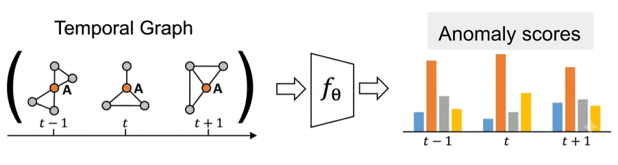
Framework Overview
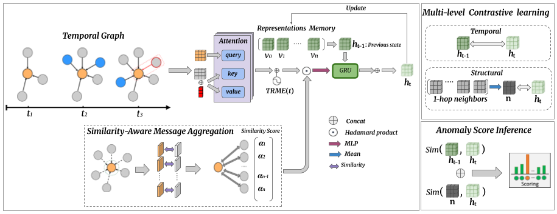
Temporal Rotary Message Encoding (TRME)
llustration of Temporal Rotary Message Encoding (TRME). Each edge message is partitioned into two- dimensional subspaces, and every subspace is rotated by an angle proportional to the interaction timestamp, embedding continuous-time information directly into the message geome- try before neighborhood aggregation.
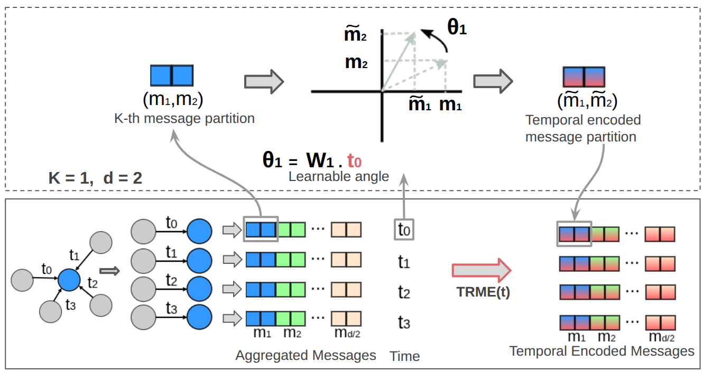
Results
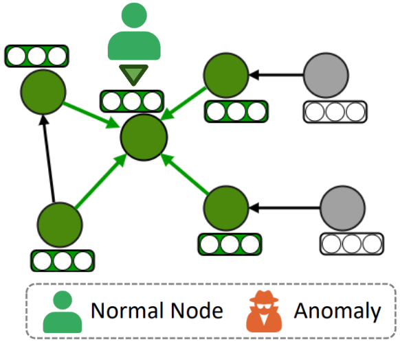
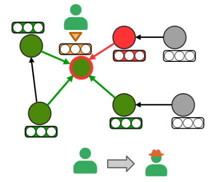
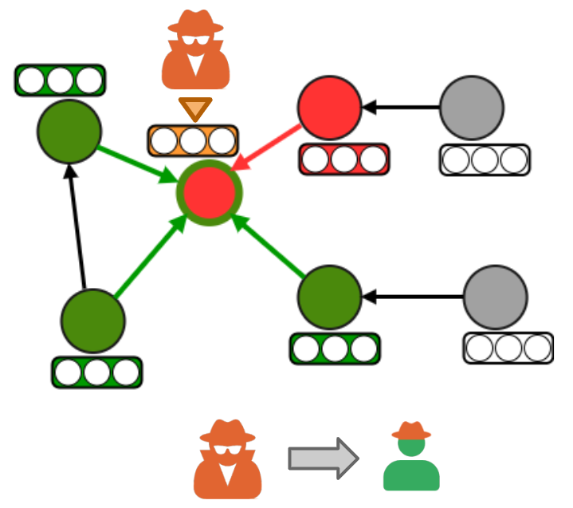
Illustration of the impact of anomalous nodes on GNN-based representation learning: (a) a normal node connected to normal neighbors, yielding a reliable representation; (b) a normal node influenced by an anomalous neighbor, leading to representation contamination; and (c) an anomalous node surrounded by normal neighbors, resulting in a camouflaged representation that obscures anomalous behavior and reduces discriminative capability.
Results
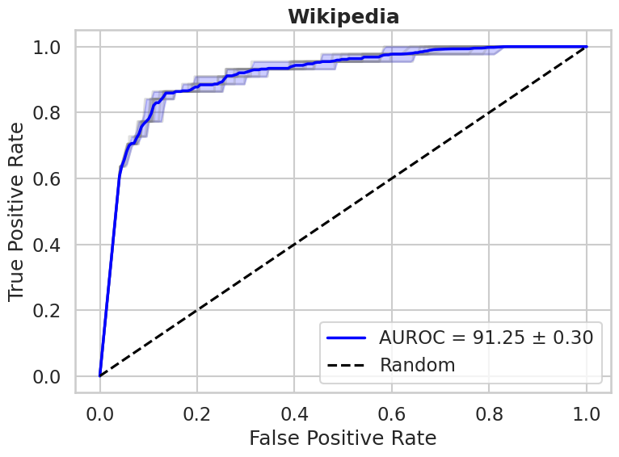
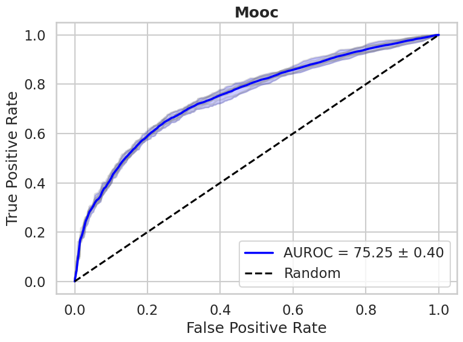
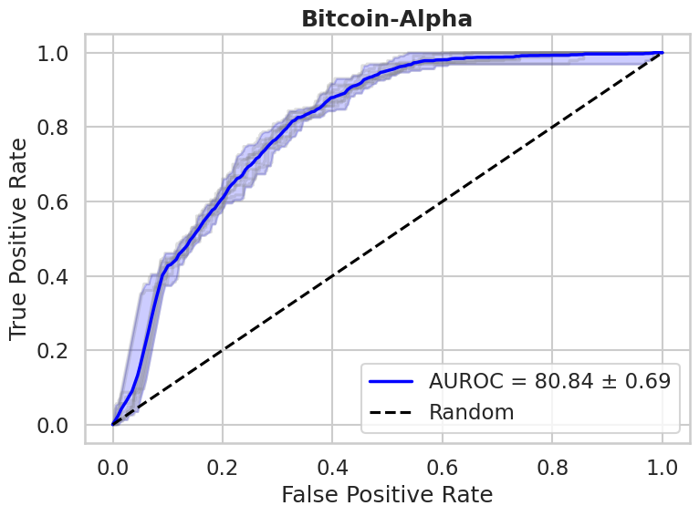
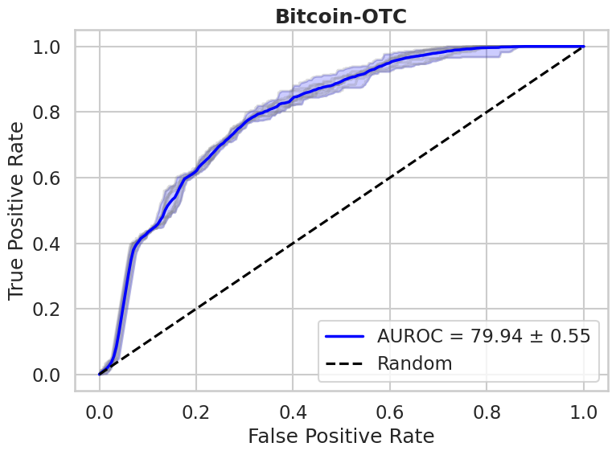
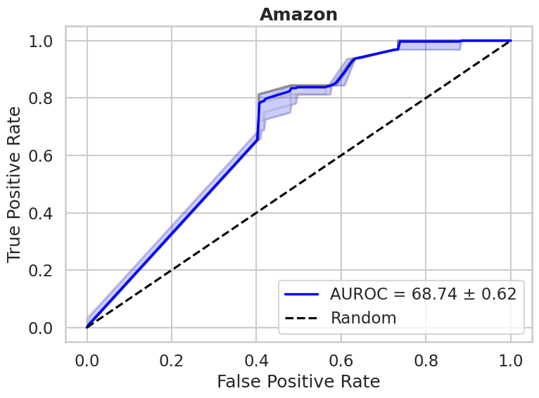
Mean ROC curves of T-ADTG on the five benchmark datasets, averaged over 10 runs. Each panel reports the mean AUROC and its standard deviation.
Acknowledgements
This work was carried out within the STRAST Research Group at the Information Processing and Telecommunications Center (IPTC), Universidad Politécnica de Madrid, as part of the CEDAR project, funded by the Horizon Europe Programme (Grant Agreement No. 101135577).
BibTeX
The paper has been submitted and is currently under review.